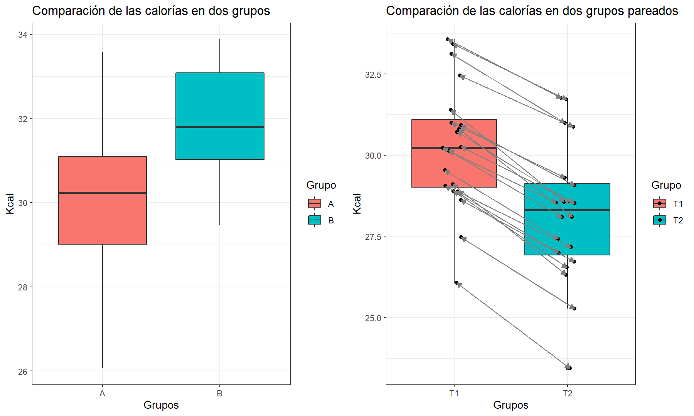
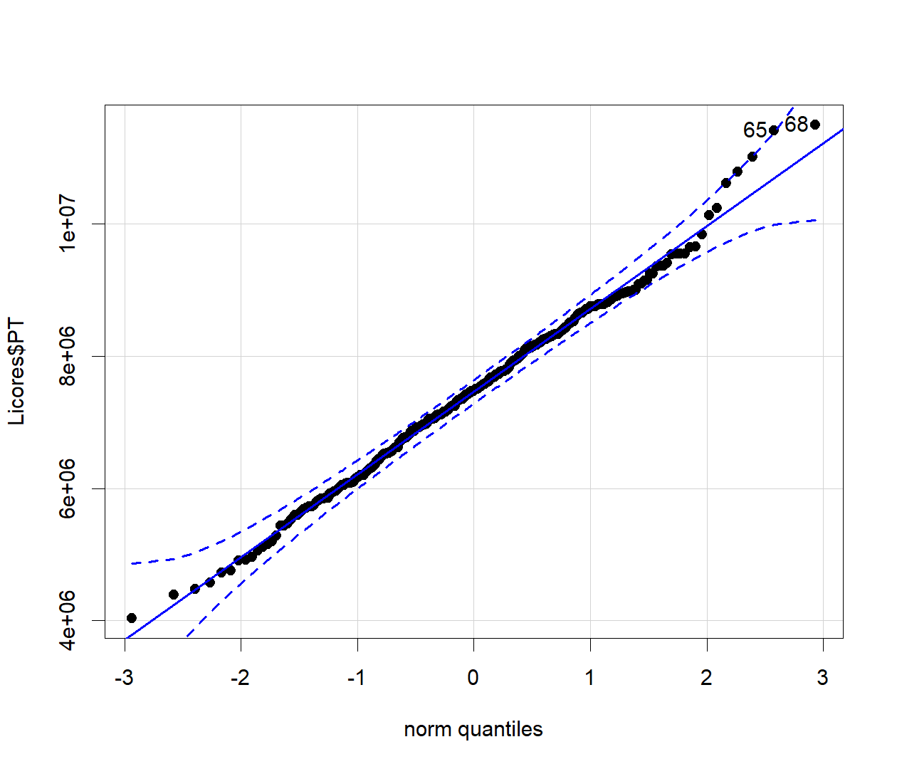
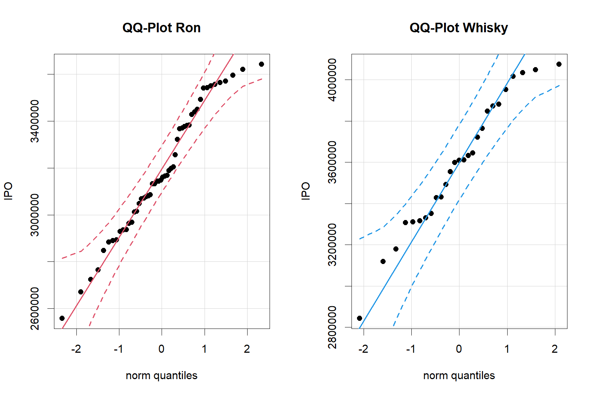

Pruebas de Hipótesis II
Inferencia comparación de grupos
Hasta ahora se ha realizado estimaciónes y verificaciones de hipótesis para un parámetro. Ahora, el interés es comparar dos grupos, es decir, comparar una característica común pero que se diferencian en dos estados distinos y que no existen otras condiciones adicionales que diferencien las dos muestras.
Para estos casos se presentan dos situaciones, que las muestras sean independientes o que las muestras sean pareadas, es decir, que es el seguimiento de un solo individuo en el cambio de estado (tiempo, área, condición).

Dada estas situaciones entonces surge la pregunta ¿Existe diferencia significativa entre los dos grupos? Para responder esta pregunta tenemos dos procedimientos para llegar a la respuesta:
- Intervalos de confianza (IC)
- Pruebas de hipótesis (PH)
Como vimos en la primera parte existe una relación directa entre los dos procedimientos cuando se habla de inferencia sobre un parámetro, para el caso de la comparación de grupos también existe esta relación entre IC y PH, sin embargo, el procedimiento involucra unos pasos adicionales en el caso de la diferencia de promedios.
PH para diferencia de proporciones
La prueba que se utiliza con mas frecuencia con relación a la diferencia entre las proporciones de dos poblaciones es aquella en la que su diferencia es cero. Sin embargo, es posible probar que dicha diferencia es igual a algún otro valor. Es posible efectuar pruebas tanto unilaterales como bilaterales.
Cuando la hipótesis nula que va a probarse es \(P_1 -P_2= 0\), se supone que las proporciones de las dos poblaciones son iguales. Esto se utiliza como justificación para combinar los resultados de las dos muestras y obtener una estimación ponderada de la proporción común supuesta. Las hipótesis están dadas por:
\[\begin{align*} H_0: p_A-p_B = \delta \quad \text{vs} \quad H_a: \begin{cases} p_A-p_B &< \delta \\ p_A-p_B &> \delta \\ p_A-p_B &\neq \delta \\ \end{cases} \end{align*}\]
El estadístico de prueba está dado por:
\[Z_c=\frac{(\hat p_1 - \hat p_2)-\delta}{\sqrt{\frac{\bar p(1-\bar p)}{n_1}+\frac{\bar p(1-\bar p)}{n_2}}} \sim N(0,1)\]
donde \(\bar p\) es la proporción muestral agrupada:
\[\bar p = \cfrac{x_1 + x_2}{n_1+n_2}\]
Para un \(\alpha\) dado, la Región Crítica es de la forma:
\[\begin{align*} R.C: \begin{cases} Z_c &\rightarrow\, Z_c <z_\alpha \\ Z_c &\rightarrow\, Z_c >z_{1-\alpha} \\ Z_c &\rightarrow\, |Z_c| >z_{1-\alpha/2} \\ \end{cases} \qquad V_p: \begin{cases} P(Z < Z_c) \\ P(Z > Z_c) \\ P(|Z| > |Z_c|) \\ \end{cases} \end{align*}\]
En un estudio de cuidados nutricionales en asilos para ancianos, Lan y Justice (1991) encontraron que entre 55 pacientes con hipertensión, 24 tenian una dieta con restricción de sodio. De 149 pacientes sin hipertensión, 36 tenían una dieta sin sodio. ¿Es posible concluir que, en las poblaciones muestreadas, la proporción de pacientes con dieta restringida en sodio es mayor entre pacientes con hipertensión que entre pacientes sin hipertension?
Tenemos las siguientes hipótesis: \[H_0: p_H-p_{\bar H}=0 \quad\text{vs}\quad H_a: p_H-p_{\bar H}>0\] Del enunciado podemos calcular la proporción muestral agrupada: \[\bar p=\frac{24+36}{55+149}=\frac{60}{204}=0.2941176\] Entonces con el estadístico de prueba se puede estimar la región crítica: \[Z_c=\frac{24/55-36/149}{\sqrt{\left(\frac{60}{204}\right)\left(\frac{144}{204}\right)\left(\frac{1}{55}+\frac{1}{149}\right)}}=2.709048\] Si \(\alpha =0.05\) entonces se tiene que \(Z_{0.95}=1.645\) y así la región de rechazo es de la forma: \[RC=\{Z_c\,|\,Z_c>Z_{0.95}\}=\{Z_c\,|\,2.709048>1.645\}\] Y en términos del valor-p se calcula: \[P(Z>Z_c)=P(Z>0.542326)=1-P(Z<2.709048)=0.003373829\] Como \(ZC > 1.645\) o \(0.00337 < 0.05\), entonces existe suficiente evidencia muestral que la proporción con dieta restringida en sodio es mayor entre los pacientes hipertensos que entre los pacientes sin hipertensión, por lo tanto se rechaza \(H_0\).
En R se puede hacer fácilmente las pruebas de hipótesis para la diferencia de proporciones, ya sea a partir de un conjunto de datos, una tabla/matriz o con los datos directas. La función prop.test hace los cálculos necesarios para las pruebas de hipótesis incluyendo el intervalo de confianza, no obstante, el estadístico de prueba que utiliza está basado en la distribución \(\chi^2\) y los intervalos de confianza son estimados a través del método Wilson, adicionalmente tiene la opción de hacer el cálculo a partir de la corrección de Yates para tamaños de muestra pequeños.
prop.test(x = c(24,36),n = c(55,149),
alternative = "great",correct = F,conf.level = 0.95)##
## 2-sample test for equality of proportions without continuity
## correction
##
## data: c(24, 36) out of c(55, 149)
## X-squared = 7.3389, df = 1, p-value = 0.003374
## alternative hypothesis: greater
## 95 percent confidence interval:
## 0.07055185 1.00000000
## sample estimates:
## prop 1 prop 2
## 0.4363636 0.2416107prop.test(x = c(24,36),n = c(55,149),
alternative = "great",correct = T,conf.level = 0.95)##
## 2-sample test for equality of proportions with continuity correction
##
## data: c(24, 36) out of c(55, 149)
## X-squared = 6.4309, df = 1, p-value = 0.005608
## alternative hypothesis: greater
## 95 percent confidence interval:
## 0.05810523 1.00000000
## sample estimates:
## prop 1 prop 2
## 0.4363636 0.2416107Pruebas de igualdad de Varianza
Otro paso importante es verificar si las varianzas de ambos grupos son iguales o no, esto es importante porque la intención de la comparación de grupos a partir de la diferencia de promedios solamente debe comparar un factor o grupo que diferencia las muestras. La presencia de variabilidad excesiva en una de las muestras indicaría que existe otra condición no analizada que puede afectar la comparación, sin embargo, es posible controlar este problema estimando una variación conjunta entre los dos grupos.
\[\begin{align*} H_0: \frac{\sigma_A^2}{\sigma_A^2}=1 \quad \text{vs} \quad H_a: \begin{cases} \sigma_A^2/\sigma_A^2 &<1 \\ \sigma_A^2/\sigma_A^2 &>1 \\ \sigma_A^2/\sigma_A^2 &\neq 1 \\ \end{cases} \end{align*}\]
El estadístico de prueba está dado por:
\[F_c=\frac{S_A^2}{S_B^2} \sim F_{(n_A-1,n_B-1)}\]
Para un \(\alpha\) dado, la Región Crítica es de la forma:
\[\begin{align*} R.C: \begin{cases} F_c &\rightarrow\, F_c <\frac{1}{F_{1-\alpha,\,(n_B-1,n_A-1)}} \\ F_c &\rightarrow\, F_c >F_{1-\alpha,\,(n_A-1,n_B-1)} \\ F_c &\rightarrow\, F_c < F_{1-\alpha/2,\,(n_A-1,n_B-1)} \\ \end{cases} \qquad V_p: \begin{cases} P(F_{(n_B-1,n_A-1)} < F_c) \\ P(F_{(n_A-1,n_B-1)} > F_c) \\ P(F_{(n_A-1,n_B-1)} < F_c) \\ \end{cases} \end{align*}\]
Nota
Estos pasos de verificación son necesarios para seleccionar el método estadístico adecuado para realizar la comparación de grupos, ya sea por Intervalos de Confianza o por Purebas de Hipótesis.
Comparación de medias
El objetivo de la comparación es resolver una de las siguientes hipótesis antagónicas:
\[\begin{align*} H_0: \mu_A-\mu_B = \delta \quad \text{vs} \quad H_a: \begin{cases} \mu_A-\mu_B &< \delta \\ \mu_A-\mu_B &> \delta \\ \mu_A-\mu_B &\neq \delta \\ \end{cases} \end{align*}\]
Entonces el estadístico de prueba está condicionado al comportamiento de las muestras aleatorias de cada grupo, entonces es necesario verificar si los datos son normales o no y si las varianzas son iguales o no, cada paso o decisión condiciona a seleccionar el mejor estadístico de prueba. Entonces, para seleccionar la mejor opción para compar grupos basados en la promedio tenemos los siguientes árboles de decisión para IC o para PH.


Ejemplo
La siguiente base de datos contiene información acerca de incautaciones de bebidas alcohólicas fraudulentas y de contrabando en la ciudad de Medellín en un mes, que afectan los recursos para Salud y Educación en el Departamento de Antioquia y de acuerdo a los resultados se toma decisiones para aumentar o disminuir los controles.
La base de datos contiene las variables - TL (Tipo de Licor) - PI (Precio de incautación: se refiere al precio de venta en el establecimiento por unidad) - GAE (Grados de Alcohol en etiqueta) - GAQ (grados de alcohol en prueba química) - CE (Cantidades estandarizadas: número de unidades estandarizadas a 750 ml).
Usando la información de su base de datos responda a las siguientes preguntas.
El precio total de la incautación se calcula como la cantidad estandarizada por el precio de incautación. ¿Se puede afirmar que el precio total promedio de la incautación es superior a $7’500.000?
El ipoconsumo, es el impuesto que deja de percibir el Estado para salud y educación, el cual se calcula como: \(GAQ \times CE \times 400\) (pesos). ¿Se puede afirmar que el ipoconsumo promedio del ron es inferior al ipoconsumo medio del Whisky? ¿Qué decisión se puede tomar frente al control?
El licor incautado se clasifica como “Fraudulento” si los GAE son distintos a los GAQ y como “contrabando” si son iguales. ¿La proporción de licores fraudulentos es superior al 65%? ¿Qué significa éste resultado?
Se piensa que los ilegales mezclan el licor con otras sustancias para disminuir los grados de alcohol del licor. ¿Existe evidencia para este planteamiento?
De acuerdo con los datos, se sabe que el Aguardiente y el Tequila son los licores con más incautaciones. Desde el equipo de Rentas se sostiene que el Aguardiente es el licor que más se adultera. ¿Es correcta esta afirmación?
Solución usando R
Lo primero es descargar la base de datos en la carpeta que se considere, luego debemos cargar la base de datos en RStudio para realizar los análisis. Antes de comenzar con el análisis necesitamos instalar o cargar las librerías necesarias para el análisis
# Para manipular datos
if(!require(dplyr)) install.packages("dplyr")
# Gráficos con estilo
if(!require(ggplot2)) install.packages("ggplot2")
# Pruebas de bondad de ajuste
if(!require(nortest)) install.packages("nortest")
# Gráficos QQ-plot con IC
if(!require(car)) install.packages("car")
# Importar/Exportar datos de Excel
if(!require(openxlsx)) install.packages("openxlsx")El siguiente paso es cargar la base de datos, esto lo podemos realizar directamente de RStudio con el siguiente comando:
Licores <- read.xlsx(file.choose(),sheet = 1)Revisemos la estructura de los datos, para verificar si fueron cargados correctamente.
str(Licores)## 'data.frame': 300 obs. of 5 variables:
## $ TL : chr "Ron" "Aguardiente" "Ron" "Aguardiente" ...
## $ PI : num 34719 26900 27062 29317 32471 ...
## $ GAE: num 35 29 35 29 38 29 29 38 35 40 ...
## $ GAQ: num 30.2 29 32.2 29 32.6 ...
## $ CE : num 221 253 249 254 267 ...# cambiando caracter por factor
Licores <- Licores %>% mutate_if(is.character,as.factor)El primer punto nos piden calcular el precio total de incautación, y se pregunta si el promedio de esa nueva variable es superior a 7.5 millones. Entonces tenemos las hipótesis:
\[H_o: \mu_{pt} = 7'500.000 \qquad H_a:\mu_{pt} > 7'500.000\]
Para seleccionar el estadístico de prueba más indicado, debemos probar si la distribución del precio total de incautación es Normal.
\[H_0:PT \sim N(\mu,\sigma^2) \qquad H_a: PT\not\sim N(\mu,\sigma^2)\]
Licores$PT <- Licores$CE*Licores$PI
hist(Licores$PT,col="lightblue",las=1)
# pruebas de hipótesis
shapiro.test(Licores$PT)##
## Shapiro-Wilk normality test
##
## data: Licores$PT
## W = 0.99485, p-value = 0.4134ad.test(Licores$PT)##
## Anderson-Darling normality test
##
## data: Licores$PT
## A = 0.25534, p-value = 0.7249lillie.test(Licores$PT)##
## Lilliefors (Kolmogorov-Smirnov) normality test
##
## data: Licores$PT
## D = 0.032027, p-value = 0.6393qqPlot(Licores$PT,pch=19)
## [1] 68 65Entonces, siguiendo el árbol de decisión tenemos que los datos se distribuyen normal y no conocemos los parámetros poblacionales, por lo tanto el estadístico de prueba está basado en la t-student.
t.test(Licores$PT,mu = 7500000,alternative = "greater",conf.level = 0.95)##
## One Sample t-test
##
## data: Licores$PT
## t = -0.42571, df = 299, p-value = 0.6647
## alternative hypothesis: true mean is greater than 7500000
## 95 percent confidence interval:
## 7348999 Inf
## sample estimates:
## mean of x
## 7469031Como \(\text{valor-p} \, > \, \alpha\) entonces no se rechaza \(H_0\), existe evidencia muestral suficiente de que el promedio del precio de incautaciones mesual es de $7’500.000, esto implica anualmente se esperaría que alrededor de 90 millones de pesos deje de circular ilegalmente gracias a lo no pago de impuestos o adulteración de licores.
En la siguiente pregunta se pide calcular el ipoconsumo de acuerdo a una formulación, y luego comparar si el impuesto de los licores de tipo Ron son menores a los de Whisky basado en los promedios. Entonces tenemos la siguiente hipótesis:
\[H_0: \mu_{Ir} = \mu_{Iw} \qquad H_a:\mu_{Ir} < \mu_{Iw}\]
De acuerdo al árbol de decisión tenemos que hacer los siguientes pasos:
- Calcular el ipoconsumo
- Separar la base de datos en Ron y Whisky
- Probar la normalidad de ambos grupos
- Comprobar la igualdad de varianzas de los grupos
- Escoger el mejor estadístico de prueba y realizar el análisis.
- Concluir
Los primeros dos pasos son sencillos:
Licores <- Licores %>%
mutate(IPO = GAQ*CE*400)
SoloRA <- Licores %>%
filter(TL %in% c("Ron","Whisky")) %>%
droplevels
SoloRA %>% group_by(TL) %>%
summarise(n=length(IPO),
media=mean(IPO),
desv=sd(IPO))## # A tibble: 2 x 4
## TL n media desv
## * <fct> <int> <dbl> <dbl>
## 1 Ron 52 3185673. 270971.
## 2 Whisky 27 3591694. 317110.SoloRA %>% ggplot(aes(x=IPO,fill=TL))+
geom_density(alpha=0.5)+xlim(c(2e06,5e06))+theme_bw()
Luego debemos probar la normalidad de los datos, esto lo podemos hacer de dos formas. La primera es separar la base de datos y construir dos nuevas con los grupos de interés, la otra es evaluar al mismo tiempo los valores-p de las pruebas usando dplyr.
# Primer método - Ron
SoloRA %>% filter(TL=="Ron") %>%
dplyr::select(IPO) %>% unlist %>% shapiro.test()##
## Shapiro-Wilk normality test
##
## data: .
## W = 0.96894, p-value = 0.1904SoloRA %>% filter(TL=="Ron") %>%
dplyr::select(IPO) %>% unlist %>% ad.test()##
## Anderson-Darling normality test
##
## data: .
## A = 0.50493, p-value = 0.1943SoloRA %>% filter(TL=="Ron") %>%
dplyr::select(IPO) %>% unlist %>% lillie.test()##
## Lilliefors (Kolmogorov-Smirnov) normality test
##
## data: .
## D = 0.095664, p-value = 0.2758# Primer método - Whisky
SoloRA %>% filter(TL=="Whisky") %>%
dplyr::select(IPO) %>% unlist %>% shapiro.test()##
## Shapiro-Wilk normality test
##
## data: .
## W = 0.96678, p-value = 0.5193SoloRA %>% filter(TL=="Whisky") %>%
dplyr::select(IPO) %>% unlist %>% ad.test()##
## Anderson-Darling normality test
##
## data: .
## A = 0.26387, p-value = 0.671SoloRA %>% filter(TL=="Whisky") %>%
dplyr::select(IPO) %>% unlist %>% lillie.test()##
## Lilliefors (Kolmogorov-Smirnov) normality test
##
## data: .
## D = 0.087079, p-value = 0.8639# Segundo método
SoloRA %>% group_by(TL) %>%
summarise(shapiro=shapiro.test(IPO)$p.val,
Ander_Darl=ad.test(IPO)$p.val,
lilliefords=lillie.test(IPO)$p.val)## # A tibble: 2 x 4
## TL shapiro Ander_Darl lilliefords
## * <fct> <dbl> <dbl> <dbl>
## 1 Ron 0.190 0.194 0.276
## 2 Whisky 0.519 0.671 0.864par(mfrow=c(1,2))
with(SoloRA %>% filter(TL=="Ron"),
qqPlot(IPO,pch=19,main = "QQ-Plot Ron",id=F,col.lines = 2))
with(SoloRA %>% filter(TL=="Whisky"),
qqPlot(IPO,pch=19,main = "QQ-Plot Whisky",id=F,col.lines = 4))
Como ambas muestras distribuyen normal, es necesario verificar si existe igualdad en sus varianzas, esto se comprueba con la función var.test.
with(SoloRA,var.test(IPO~TL))##
## F test to compare two variances
##
## data: IPO by TL
## F = 0.73017, num df = 51, denom df = 26, p-value = 0.3333
## alternative hypothesis: true ratio of variances is not equal to 1
## 95 percent confidence interval:
## 0.3562148 1.3878542
## sample estimates:
## ratio of variances
## 0.730172Entonces, como los datos son normales y tienen varianzas iguales, de acuerdo con el árbol de decisión el mejor estadístico de prueba está basado en la t-student y es necesario estimar la varianza conjunta, no obstante, el software lo hace:
with(SoloRA,
t.test(IPO[TL=="Ron"],
IPO[TL=="Whisky"],
var.equal = T,alternative = "less"))##
## Two Sample t-test
##
## data: IPO[TL == "Ron"] and IPO[TL == "Whisky"]
## t = -5.9561, df = 77, p-value = 3.629e-08
## alternative hypothesis: true difference in means is less than 0
## 95 percent confidence interval:
## -Inf -292527.9
## sample estimates:
## mean of x mean of y
## 3185673 3591694En conclusión, el ipoconsumo del ron es menor al del whisky con un nivel de significancia del 5%. Entonces la cantidad de impuestos que deja de percibir el departamento tiene mayor aporte en el Whisky, sin embargo, las cantidades de Ron son casi el doble que las de Whisky lo que sugiere que este licor es preferido para la adulteración. Los controles se deben aumentar para incautar más Ron y establecer una estrategia para que no aumente la adulteración del Whisky que es la que más afecta los recursos para salud.
El tercer punto nos piden calcular una nueva variable, si \(GAQ=GAE\) el licor se clasifica como contrabando en caso contrario se llamará fraudulento.
Licores <- Licores %>%
mutate(Incautacion = factor(ifelse(GAQ==GAE,"Contrabando","Fraudulento")))Luego preguntan si la proporción de licores Fraudulentos es superior al 65%. Entonces las hipótesis son:
\[H_0: p_F = 0.65 \qquad H_a: p_F >0.65\]
with(Licores,table(Incautacion))## Incautacion
## Contrabando Fraudulento
## 83 217Como en R los factores se organizan alfabéticamente, entonces debemos cambiar la hipótesis hacia los licores de contrabando, así:
\[H_0: p_C = 0.35 \qquad H_a: p_C < 0.35\]
with(Licores,
prop.test(table(Incautacion),
p = 0.35,
alternative = "less",
conf.level = 0.95,
correct = F))##
## 1-sample proportions test without continuity correction
##
## data: table(Incautacion), null probability 0.35
## X-squared = 7.0916, df = 1, p-value = 0.003872
## alternative hypothesis: true p is less than 0.35
## 95 percent confidence interval:
## 0.0000000 0.3210025
## sample estimates:
## p
## 0.2766667Como el valor-p es mucho menor al nivel de significancia, entonces se rechaza \(H_0\) por lo tanto existe evidencia muestral para afirmar que la proporción de licores Fraudulentos es mayor del 65%. Por lo tanto, las rentas ilegales de licores están basadas en mayor medida de la adulteración, el impacto para la salud pública es muy grave, pues los efectos nocivos de los licores que no son correctamente destilados aumenta los riesgos clínicos como la ceguera, el cáncer de órganos digestivos o la muerte.
Para el cuarto punto nos piden determinar si los grados de alcohol son menores en los licores fraudulentos en comparación con los de contrabando, debido a que si los grados de alcohol disminuyen se va ver reflejado en la variable \(GAQ\) y si los licores son de contrabando no se notará el cambio en los grados de alcohol.
\[H_0: \mu_{GAQf}=\mu_{GAQc} \qquad H_a: \mu_{GAQf}<\mu_{GAQc}\]
Para responder esta pregunta debemos estimar un IC para la diferencia de medias, donde la variable cuantitativa es GAQ y la variable que agrupa es Incautacion. Entonces los pasos a seguir son:
- Verificar normalidad en ambos grupos.
- Verificar tamaños de muestra si al menos uno no distribuye normal.
- Verificar igualdad de varianzas si ambos distribuyen normal.
- Seleccionar el estadístico de prueba.
- Concluir.
En R es sencillo realizar estos pasos. Primero, podemos realizar un resumen numérico de los datos y evaluar la normalidad de los mismos.
Licores %>% group_by(Incautacion) %>%
summarise(n=length(GAQ),
media=mean(GAQ),
desv=sd(GAQ),
SW=shapiro.test(GAQ)$p,
AD=ad.test(GAQ)$p,
LF=lillie.test(GAQ)$p)## # A tibble: 2 x 7
## Incautacion n media desv SW AD LF
## * <fct> <int> <dbl> <dbl> <dbl> <dbl> <dbl>
## 1 Contrabando 83 33.4 4.36 1.86e-10 1.97e-22 8.00e-23
## 2 Fraudulento 217 29.8 3.88 4.86e-13 3.70e-24 4.83e-23Como ambas muestras no distribuyen normal y los tamaños de muestra de ambos grupos son superiores a 30, podemos realizar el intervalo de confianza para la media, aproximando el resultado a una normal. En R existe un paquete para realizar estos intervalos, y al mismo tiempo verificar hipótesis, es muy similar al t.test la diferencia es que hay que especificarle los valores de las desviaciones estadándar de cada grupo. El paquete se llama BSDA y la función de interés es z.test.
install.packages("BSDA",dependencies = T)Para este ejercicio, sabemos que no contamos con información previa acerca de los datos, por lo tanto no conocemos las varianzas de los grados de alcohol por cada grupo, así que se debe utilizar las varianzas muestrales de cada uno.
require(BSDA)
with(Licores,
z.test(x = GAQ[Incautacion=="Fraudulento"],
y = GAQ[Incautacion=="Contrabando"],
sigma.x = sd(GAQ[Incautacion=="Fraudulento"]),
sigma.y = sd(GAQ[Incautacion=="Contrabando"]),
alternative = "less"))##
## Two-sample z-Test
##
## data: GAQ[Incautacion == "Fraudulento"] and GAQ[Incautacion == "Contrabando"]
## z = -6.5525, p-value = 2.829e-11
## alternative hypothesis: true difference in means is less than 0
## 95 percent confidence interval:
## NA -2.679648
## sample estimates:
## mean of x mean of y
## 29.84393 33.42169En conclusión, los grados de alcohol de los licores Fraudulentos son menores a los de Contrabando, ya que el valor-p es menor que el nivel de significancia del 5%, por lo tanto se rechaza la hipótesis nula. Entonces los ilegales que adulteran los licores, disminuyen significativamente los grados de alcohol, esto se explica porque los licores destilados contienen etanol que es más fácil de procesar para el hígado en comparación con el metanol que en su mayoría es utilizado para adulterar los licores, el cual produce envenenamiento. Si bien los grados de alcohol en los licores fraudulentos son menores, no significan que sean menos letales, debido a su composición química.
Ejercicio
DATOS DE BAJO PESO DE NACIMIENTO
Estos datos provienen de Hosmer y Lemeshow (2000) Regresión logística aplicada.
El objetivo de este estudio fue identificar los factores de riesgo asociados con el nacimiento de un bebé con bajo peso al nacer (que pesa menos de 2500 gramos). Se recopilaron datos sobre 189 mujeres, 59 de las cuales tenían bebés con bajo peso al nacer y 130 de los cuales tenían bebés con peso normal al nacer. Cuatro variables que se consideraron importantes fueron la edad, el peso del sujeto en su último período menstrual, la raza y el número de visitas al médico durante el primer trimestre del embarazo.
Los datos fueron recolectados en el Baystate Medical Center, Springfield, Massachusetts, durante 1986.
if(!require(MASS)) install.packages("MASS")
birthwt| low | age | lwt | race | smoke | ptl | ht | ui | ftv | bwt | |
|---|---|---|---|---|---|---|---|---|---|---|
| 85 | 0 | 19 | 182 | 2 | 0 | 0 | 0 | 1 | 0 | 2523 |
| 86 | 0 | 33 | 155 | 3 | 0 | 0 | 0 | 0 | 3 | 2551 |
| 87 | 0 | 20 | 105 | 1 | 1 | 0 | 0 | 0 | 1 | 2557 |
| 88 | 0 | 21 | 108 | 1 | 1 | 0 | 0 | 1 | 2 | 2594 |
| 89 | 0 | 18 | 107 | 1 | 1 | 0 | 0 | 1 | 0 | 2600 |
| 91 | 0 | 21 | 124 | 3 | 0 | 0 | 0 | 0 | 0 | 2622 |
| 92 | 0 | 22 | 118 | 1 | 0 | 0 | 0 | 0 | 1 | 2637 |
| 93 | 0 | 17 | 103 | 3 | 0 | 0 | 0 | 0 | 1 | 2637 |
| 94 | 0 | 29 | 123 | 1 | 1 | 0 | 0 | 0 | 1 | 2663 |
| 95 | 0 | 26 | 113 | 1 | 1 | 0 | 0 | 0 | 0 | 2665 |
| 96 | 0 | 19 | 95 | 3 | 0 | 0 | 0 | 0 | 0 | 2722 |
| 97 | 0 | 19 | 150 | 3 | 0 | 0 | 0 | 0 | 1 | 2733 |
| 98 | 0 | 22 | 95 | 3 | 0 | 0 | 1 | 0 | 0 | 2751 |
| 99 | 0 | 30 | 107 | 3 | 0 | 1 | 0 | 1 | 2 | 2750 |
| 100 | 0 | 18 | 100 | 1 | 1 | 0 | 0 | 0 | 0 | 2769 |
La descripción de las variables de esta base de datos están aquí.
De acuerdo con la descripción se organiza el conjunto de datos de mejor forma como sigue.
datos <- with(birthwt, {
race <- factor(race, labels = c("white", "black", "other"))
ptd <- factor(ptl > 0)
ftv <- factor(ftv)
levels(ftv)[-(1:2)] <- "2+"
data.frame(low = factor(low>0),
age, lwt, race, smoke = (smoke > 0),
ptd, ht = (ht > 0), ui = (ui > 0),
ftv,bwt)
})| low | age | lwt | race | smoke | ptd | ht | ui | ftv | bwt |
|---|---|---|---|---|---|---|---|---|---|
| FALSE | 19 | 182 | black | FALSE | FALSE | FALSE | TRUE | 0 | 2523 |
| FALSE | 33 | 155 | other | FALSE | FALSE | FALSE | FALSE | 2+ | 2551 |
| FALSE | 20 | 105 | white | TRUE | FALSE | FALSE | FALSE | 1 | 2557 |
| FALSE | 21 | 108 | white | TRUE | FALSE | FALSE | TRUE | 2+ | 2594 |
| FALSE | 18 | 107 | white | TRUE | FALSE | FALSE | TRUE | 0 | 2600 |
| FALSE | 21 | 124 | other | FALSE | FALSE | FALSE | FALSE | 0 | 2622 |
| FALSE | 22 | 118 | white | FALSE | FALSE | FALSE | FALSE | 1 | 2637 |
| FALSE | 17 | 103 | other | FALSE | FALSE | FALSE | FALSE | 1 | 2637 |
| FALSE | 29 | 123 | white | TRUE | FALSE | FALSE | FALSE | 1 | 2663 |
| FALSE | 26 | 113 | white | TRUE | FALSE | FALSE | FALSE | 0 | 2665 |
| FALSE | 19 | 95 | other | FALSE | FALSE | FALSE | FALSE | 0 | 2722 |
| FALSE | 19 | 150 | other | FALSE | FALSE | FALSE | FALSE | 1 | 2733 |
| FALSE | 22 | 95 | other | FALSE | FALSE | TRUE | FALSE | 0 | 2751 |
| FALSE | 30 | 107 | other | FALSE | TRUE | FALSE | TRUE | 2+ | 2750 |
| FALSE | 18 | 100 | white | TRUE | FALSE | FALSE | FALSE | 0 | 2769 |
Con esta base de datos responda las siguientes preguntas utilizando R con un nivel de significancia del 5%.
- Para las mamás que tuvieron bebés con bajo peso al nacer, ¿existen diferencias en su condición de fumadoras?
- Se cree que las mamás que tuvieron más de un parto previo, la edad es menor a 27 años ¿Es cierta esta hipótesis?
- La hipertensión es un indicador asociado al peso, para las mamás hipertensas ¿existe diferencias significativas entre el peso de las blancas y otros grupos étnicos?
- Se piensa que las mujeres blancas tienen bebés con pesos más altos que las de otros grupos étnicos ¿Es cierta esta hipótesis?
- El hábito de fumar afecta el desarrollo del feto en las mujeres gestantes, ¿existen diferencias en los pesos al nacer dado este hábito?
- Para las mamás que tuvieron bebés con bajo peso al nacer, ¿son más jóvenes las mamás de otros grupos étnicos en comparación a las mamás blancas?